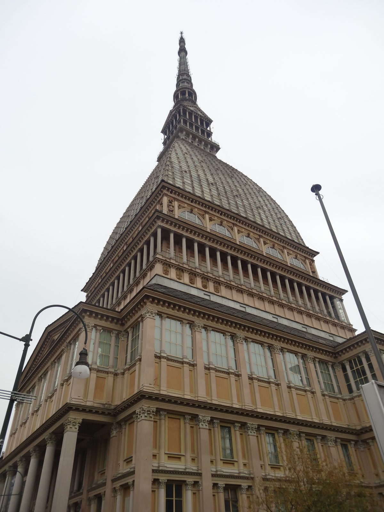

Giorno 3 di 7 · Lunedì 10 agosto · Alba → Torino (una notte)
Ultima mattina ad Alba, poi Torino: Palazzo Reale e la Mole
📌 In sintesi
- Ultima mattina ad Alba: Duomo, corso, torri e un'ultima tappa da Bodrato, poi pranzo di saluto in famiglia.
- Nel primo pomeriggio il regionale per Torino, con tempo vero per il Palazzo Reale e, prima delle 19:00, l'ascensore della Mole (il martedì è chiuso).
- Una notte in hotel a Torino, per evitare l'andata e ritorno in giornata da Alba e il regionale di ritorno la sera.
🕘 Itinerario della giornata
- 09:00Colazione con calma, l'ultima ad Alba.
- 09:30Duomo di San Lorenzo — facciata neogotica, e sotto il pavimento resti archeologici romani visitabili.
- 10:00Via Vittorio Emanuele II, il corso pedonale principale: un ultimo giro fra vetrine e palazzi nobiliari.
- 10:20Le torri medievali — Alba ne conta ancora una ventina, resti della sua fama di "città dalle cento torri". Si vedono bene da fuori camminando in centro.
- 10:40Bodrato, cioccolateria storica di Alba dagli anni '40 — l'ultima occasione per un gianduiotto vero, fatto con la nocciola Tonda Gentile delle Langhe, e per portarsene a casa una scatola.
- 12:00Pranzo di saluto in famiglia, anticipato rispetto al solito per prendere il treno del primo pomeriggio con margine.
- 12:50Saluti alla famiglia e verso la stazione di Alba con i bagagli: oggi si lascia la casa della sorella, stanotte si dorme in hotel a Torino.
- 13:07Regionale SFM4 (n. 26445), Alba → Torino Porta Susa, arrivo 14:22 (1h15, confermato su Trenitalia).
- 14:22Arrivo a Torino Porta Susa, stavolta con i bagagli: si dorme in città stanotte, non si torna ad Alba.
- 14:45Check-in al Blunotte Torino - Piazza Castello, Via Palazzo di Città 14 — check-in dalle 12:30, a due passi da Palazzo Reale: giusto il tempo di lasciare i bagagli.
- 15:15Palazzo Reale — gli interni (Sala delle Guardie Svizzere, Scala delle Forbici, Armeria Reale) e i Giardini Reali sul retro. Ultimo ingresso alle 18:00, ma oggi c'è tempo per farlo con calma: contate un'ora abbondante.
- 16:45Piazza San Carlo — i portici barocchi, le due chiese gemelle, la statua equestre.
- 17:15Mole Antonelliana, ascensore panoramico — chiude alle 19:00 di lunedì: 30-40 minuti fra fila, salita e vista sulle Alpi dalla cupola. Va fatto oggi, il martedì il museo è chiuso.
- 18:00Bicerin da Baratti & Milano, Piazza Castello — caffè, cioccolata e crema di latte non mescolati, il momento dolce della giornata.
- 18:30Tempo libero in centro, prima di cena.
- 19:30Cena da Tre Galline, quadrilatero romano — trattoria storica torinese per agnolotti del plin e vitello tonnato.
- 21:30Notte in hotel a Torino.
🗺️ La mappa del giro
🍷 Dove mangiare

- Metà mattinaBodrato, cioccolateria storica di Alba — l'ultimo gianduiotto prima di partire.
- PranzoDi saluto, in famiglia ad Alba — l'ultimo pasto a casa della sorella prima di trasferirsi a Torino.
- Metà pomeriggioBaratti & Milano, Piazza Castello — il bicerin: caffè, cioccolata e crema di latte non mescolati, in un bicchierino di vetro.
- CenaTre Galline, quadrilatero romano — trattoria storica torinese, agnolotti del plin e vitello tonnato.
💡 Note e dritte
Perché la mattina ad Alba è finita qui, e non nel Giorno 4. Duomo, corso, torri e Bodrato erano prima l'ultima mattina prima di partire per Verona: spostandoli oggi, si libera tutta la mattina dell'11 agosto per Torino, e non serve più tornare ad Alba stasera.
Una notte al Blunotte Torino - Piazza Castello, non più un'andata e ritorno in giornata. Prenotazione confermata su Booking.com (n. 6105777194), 67,50 € già pagati + 7,60 € di tassa di soggiorno da pagare in struttura (3,80 € a persona a notte): evita il regionale di ritorno la sera, con orario incerto perché il 10 agosto è un lunedì, e toglie la corsa contro l'ultimo treno per vedere Palazzo Reale e la Mole con calma. Cancellazione gratuita fino al 2 agosto 2026: dopo quella data, nessun rimborso.
La Mole si fa oggi, non domani. Il Museo del Cinema e l'ascensore panoramico chiudono alle 19:00 il lunedì e sono chiusi il martedì: se salta oggi, nel Giorno 4 non si recupera più.
Il margine fra i saluti e il treno è stretto sulla carta. Sono solo 17 minuti fra le 12:50 e le 13:07: il sito non ha l'indirizzo di casa (per scelta), quindi non può dire quanto ci si mette davvero ad arrivare in stazione. Se la casa non è a due passi, vale la pena anticipare i saluti di qualche minuto.
Se oggi non gira. Si taglia Piazza San Carlo, non Palazzo Reale o la Mole Piazza San Carlo è un passaggio, non una tappa con un orario di chiusura: Palazzo Reale e la Mole invece hanno entrambi un ultimo ingresso oggi, ed è l'unico giorno buono per la Mole.